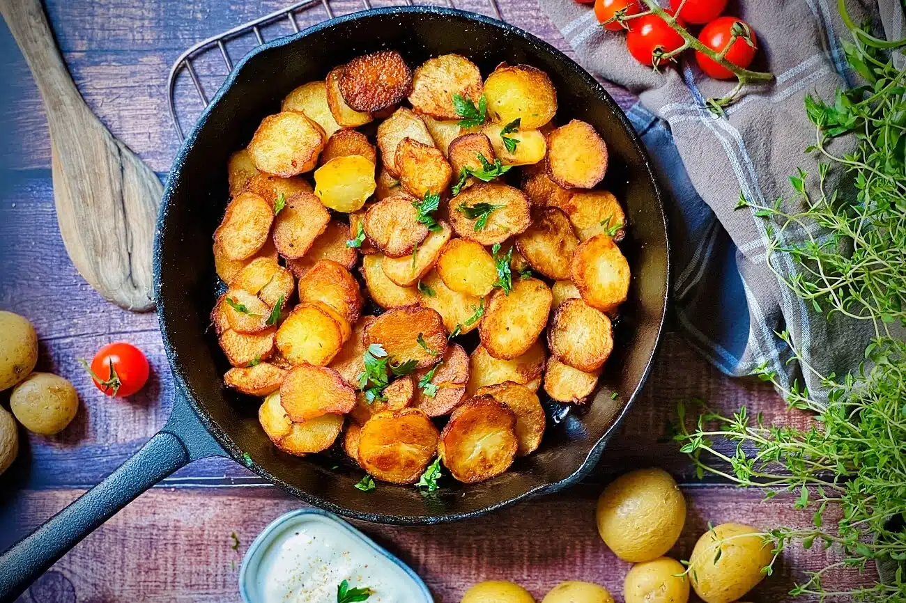

Pan-fried potatoes are a classic, versatile German dish that is easily adapted with additional ingredients and comes in different flavor combinations. The potatoes are traditionally diced or sliced, then combined with bacon, ham, onions, vegetables, and a variety of fresh herbs and spices.
Meal prep time : 40 minutes
Servings : 4